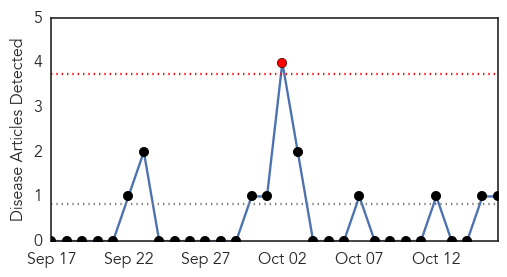
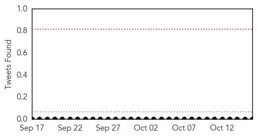
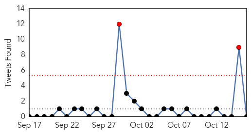

Chikungunya
30-Day Web Trend
1 alerts, 0 warnings

30-Day Twitter Trend
0 alerts, 0 warnings

Article Locations
Article Confidences

Top Articles:
Top Tweets:
-
No tweets found for Oct 16, 2015
Unknown
30-Day Web Trend
0 alerts, 0 warnings

30-Day Twitter Trend
2 alerts, 0 warnings

Article Locations


Article Confidences

Top Articles:
- 0.992
- Camels in Kenya test positive for MERS virus: study
- 0.979
- No Needle nasal spray flu vaccine available for kids in Ontario
- 0.976
- Philippines asks over 400 airline passengers to check for MERS
- 0.933
- Delaware reports first flu case of new season
- 0.922
- African Health Officials Hail Artemisinin For Combating Malaria - World
- 0.917
- Chicago Tribune
- 0.917
- Chicago Tribune
- 0.917
- Chicago Tribune
- 0.917
- Chicago Tribune
- 0.917
- Chicago Tribune
- 0.917
- Chicago Tribune
- 0.917
- Chicago Tribune
- 0.917
- Chicago Tribune
- 0.917
- Chicago Tribune
- 0.917
- Chicago Tribune
- 0.917
- Chicago Tribune
- 0.912
- Almost 70 people infected with scabies during outbreak at Burlington hospital
- 0.912
- Salmonella Outbreak Hits Eight Provinces Including B.C.
- 0.911
- Pet Talk: Feline Leukemia
- 0.898
- N&N hospital patients are tested for an antibiotic resistant superbug
- 0.855
- Q fever: Goat dairy farmer developing Australian vaccine as 'endemic' disease rips through herd
- 0.817
- Finding support for Q Fever
- 0.816
- Health Experts Say Fall Is Best Time to Get Flu Shots
- 0.771
- Govt’s Shs 4.7bn plot to improve medical care
- 0.727
- Syrian army launches Aleppo offensive with Iranian support
- 0.727
- Strauss-Kahn target of lawsuit over failed business venture
- 0.727
- Arson attack on holy Jewish site starts new wave of unrest
- 0.727
- Hungary to seal border with Croatia over migrant crisis
- 0.727
- EU, Turkey refugee plan only a draft, says Ankara
- 0.727
- EU, Turkey agree on migrant ‘action plan’ as Afghan shot dead
- 0.719
- Canada investigates Salmonella outbreak
- 0.661
- 11 key strategies to reduce orthopedic surgery complications — And resulting claims
- 0.648
- Update on global polio eradication and the polio vaccine
- 0.637
- More than 50 cases confirmed of vesicular stomatitis virus
- 0.625
- Protecting against rabies
- 0.607
- WHO officials hope to eradicate polio by 2024
- 0.595
- Oregon State receives grants to investigate infectious disease outbreak
- 0.559
- Vaccine for Johne's 'years away'
- 0.554
- A new virus on Romanian territory. The European Commission and the EU Member States have been notified
- 0.539
- Auburn child infected with deadly E. coli strain goes home
- 0.537
- Auburn boy infected with E. coli returns home — Health — Bangor Daily News — BDN Maine
- 0.517
- Arizona's initiative played part in latest Nobel Prize in medicine
- 0.513
- Hospital treatments severely threatened by antibiotic resistance
- 0.505
- Here Are Your Chances of Getting an Antibiotic-Resistant Infection After Surgery
Top Tweets:
-
No tweets found for Oct 16, 2015